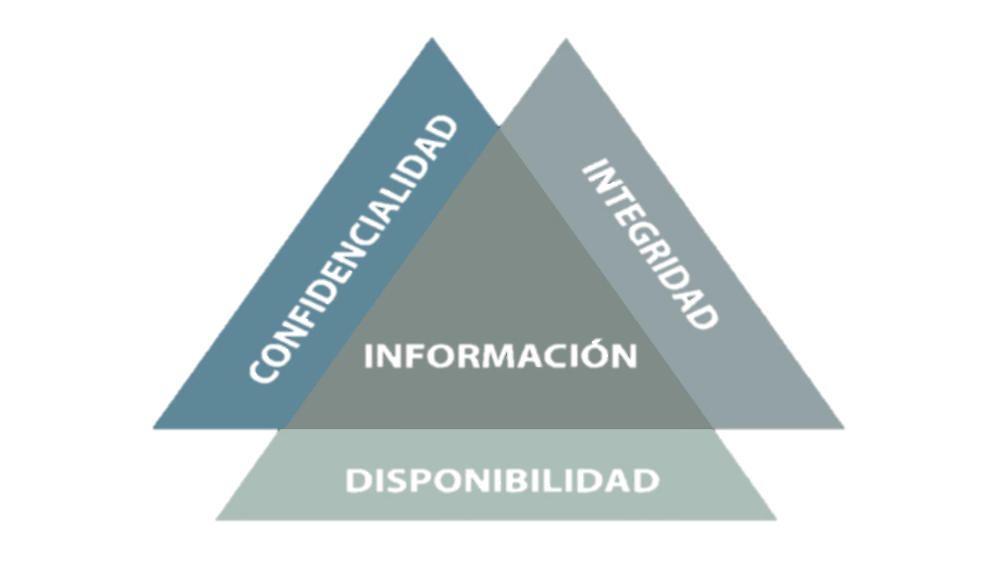

Los 3 Principios de la Seguridad de la Información.

Imagen 2. Infosegur.Wordpress. (s.f.). Conceptos básicos de la seguridad informática. [Figura]. Recuperado de https://infosegur.files.wordpress.com/2013/11/unidad-1.jpg
La seguridad informática establece normas para disminuir los riesgos a la información o la infraestructura informática; como horarios de funcionamiento, restricciones a lugares, autorizaciones, denegaciones, perfiles de usuario, planes de emergencia, protocolos, entre otros, lo cual permita un nivel de seguridad adecuado.
La confidencialidad, integridad y disponibilidad hacen parte esencial de la seguridad de la información y esta de la misma manera con la seguridad informática; que busca constantemente minimizar el perímetro de inseguridad, y aumentar la protección e estos tres principios.
La confidencialidad hace alusión a clasificar la información dependiendo su relevancia en el contexto específico.
La integridad significa que los datos y la información no sufra ninguna transformación, un método técnico comúnmente utilizado para la validación de la integridad, son las sumas de verificación hash, las cuales manejan varios tipos de algoritmos, algunos de ellos son; MD5, SHA1, SHA256, SHA512, entre otros…
La disponibilidad es la funcionalidad de los datos y la información en tiempo, para la persona que debe estar disponible.
Ahora bien, en una auditoría de seguridad informática se buscan vulnerabilidad que afecten la confidencialidad, integridad y disponibilidad de los datos y la información; y una auditoría proactiva no sólo encuentra vulnerabilidades; sino también, describe específicamente la vulnerabilidad y además muestra o da solución a la misma.